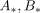
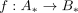
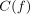

quasi isomorphism and cone as exact chain complex
1. Proposition
Let  be an abelian category and
be an abelian category and  be the category of chain complexes.
Suppose
be the category of chain complexes.
Suppose

are chain complexes and
a chain mapTFAE:
 is a quasi-isomorphism
is a quasi-isomorphism
is an exact chain complex
 2)
2)